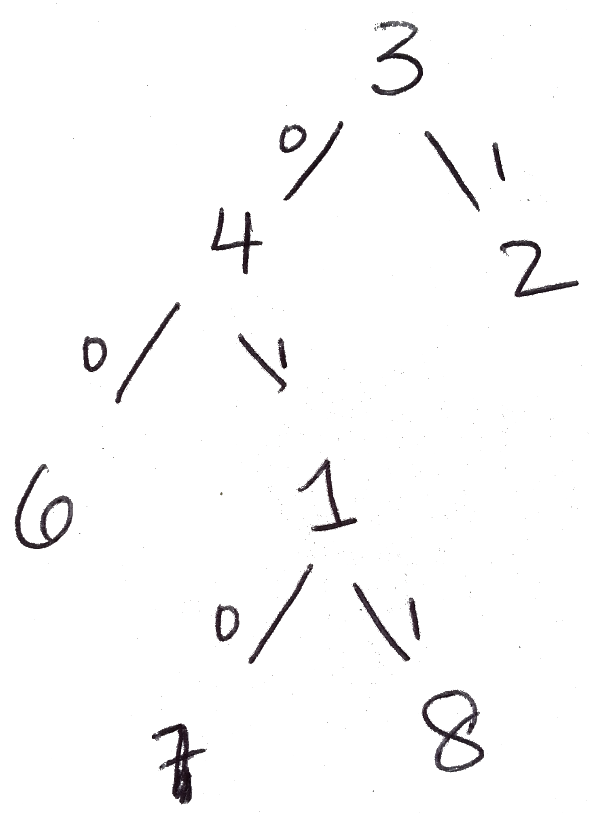

CSc 120: Prefix Codes: Examples
Examples and testing
At this point in the semester
you've done enough programming, and worked with enough programming examples,
that they should not be a mystery to you. Therefore, instead
of giving you a bunch of examples, we will describe how you can
construct examples for yourself:
-
Write down a set of node labels. Each of these is an integer.
As an example, one of the examples I constructed began with the set of
labels
1 2 3 4 5 6 7 8
-
Construct a binary tree where each node is labeled with one of the labels
in your label set from the previous step. There is no particular
requirement your tree has to satisfy here, so you are free to build the
tree however you want.
I used paper-and-pencil for this, but of course you are welcome to write
code to do this. I simply crossed off each label from my list of labels
as I put it into my tree.
-
The line connecting any pair of nodes in a tree is usually referred to
as an edge. For each node in your tree, label the edge to its
left subtree with '0' and the edge to its right subtree with '1'.
For example, one of the trees I generated from the set of labels shown
above is:

-
Write down the preorder and inorder traversals of the tree. These
are the first two lines of your input file.
In the case of the tree shown here, these are:
Preorder: 3 4 6 1 7 8 2
Inorder: 6 4 7 1 8 3 2
-
Write down any sequence of the leaf nodes of your tree (repetitions
are allowed).
In the tree shown above, for example, the set of leaf nodes is
{6, 7, 8, 2}, so we have to use a sequence over this set, e.g.:
6 7 7 8 2 6
-
For each leaf node in the sequence from the previous step, write down
the sequence of labels on the edges as you go from the root of the
tree to that leaf node:
| Leaf node: |
6 |
7 |
7 |
8 |
2 |
6 |
| Root-to-leaf path: |
00 |
010 |
010 |
011 |
1 |
00 |
-
The root-to-leaf path, which is a sequence of 0s and 1s, is the third
line of your input file.
In the example above there is a space after
the root-to-leaf path for each leaf node. This is just for clarity:
in the input file, all you will see is a sequence of 0s and 1s without
any such spaces. So in this example, the third line in the input file
will be
00010010011100
-
If everything went well, feeding the resulting input file to your
program should cause it to print out a post-order traversal of your tree
and the sequence of leaf nodes you used in step 5 above.